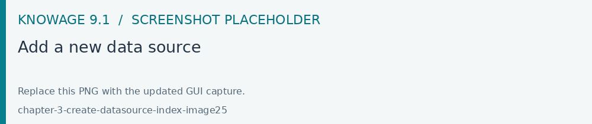
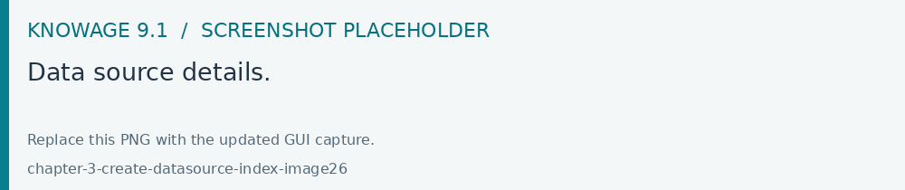
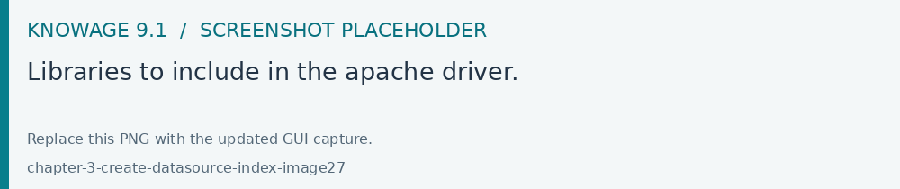

Create a new Data Source
This chapter covers connector-specific configuration for relational, cloud, Big Data and NoSQL sources. Register connections in Modules > Data Providers > Data Source as described in Add new Data Source. Connector availability depends on the installed JDBC driver and its supported database version.
In order to connect to your data, you have to define a new data source connection.
Knowage manages two types of data source connections:
connections retrieved as JNDI resources, which are managed by the application server on which Knowage is working. This allows the application server to optimize data access (e.g. by defining connection pools) and thus are the preferred ones. Here you can find information how create connection pool in Tomcat : https://tomcat.apache.org/tomcat-9.0-doc/jndi-datasource-examples-howto.html
direct JDBC connections, which are directly managed by Knowage;
Important
How to create connection JNDI on Tomcat
Create connection pool on
TOMCAT_HOME/conf/server.xmlAdd ResourceLink on context.xml
To add a new connection, first add the relative JDBC driver to the folder TOMCAT_HOME/lib and restart Knowage. Then, login as administrator (user: biadmin, password: biadmin are the default credential) and select the Data source item from the Data provider panel in the administrator menu.
By clicking the Add button on the top right corner of the left panel, an empty form will be displayed on the right.

Fig. 81 Add a new data source

Fig. 82 Data source details.
The detail page of each data source (on the right side as shown in the figures above) includes the following properties:
- Label
Mandatory identifier of the data source.
- Description
Description of the data source.
- Dialect
The dialect used to access the database. Supported dialects are:
Table 4 Certified Data Sources Certified Data Sources
Oracle
11, 12
MySQL
5.7, 8
PostgreSQL
8.2, 9.1, 12.3
Maria DB
10.1, 10.2, 10.3
Teradata
15.10.0.7
Vertica
9.0.1-0
Apache Hive 1
1.1.0
Apache Hive 2
2.3.2
Apache Impala
2.6.0
Apache Spark SQL
2.3.0
Apache Cassandra
2.1.3
Mongo DB
3.2.9
Orient DB
3.0.2
Google Big Query
Amazon RedShift
(JDBC driver v1)
Azure Synapse
- Read Only
Available options are: Read Only and Read-and-write. In case the data source is defined as read-and-write, it can be used by Knowage to write temporary tables.
- Write
Default If a data source is set as Write Default then it is used by Knowage for writing temporary tables also coming from other Read Only data sources. Note that each Knowage installation can have only one Write Default data source.
- Type
The available options are
If you want to define a direct JDBC connection, then you have to also set the following fields:
URL Database URL. An example for MySQL databases is
jdbc:mysql://localhost:3306/foodmart_keyUser Database username.
Password Database password.
Driver Driver class name. An example for MySQL databases is
com.mysql.jdbc.Driver.
If instead you want to define a JNDI connection, fill in the following fields:
Multischema Available options are Yes or No. If Yes, the JNDI resource full name is calculated at runtime by appending a user’s profile attribute (specified in the Multischema attribute field) to the JNDI base name defined in the server.xml, we suppose it has been told at the end of installation or during server configuration.
Schema attribute The name of the profile attribute that determines the schema name.
JNDI NAME It depends on the application server. For instance, for Tomcat 7 it has the format
java:comp/env/jdbc/<resource_name>. If the data source is multischema, then the string isjava:comp/env/jdbc/<prefix>.
Once you have filled the form, you can test the new data source by clicking on the Test button at the top right corner of the page and then save it.
Now you are connected to your data and you can start a new Business Intelligence project with Knowage!
Big Data and NoSQL
In this section we describe how you can connect Knowage to different Big Data data sources.
Important
Enterprise Edition only
Please note that these connections are available for products KnowageBD and KnowagePM only.
Hive
Apache Hive is a data warehouse infrastructure built on top of Hadoop for providing data summarization, query, and analysis. Apache Hive supports analysis of large datasets stored in Hadoop’s HDFS and compatible file systems such as Amazon S3 filesystem. It provides an SQL-like language called HiveQL with schema on read and transparently converts queries to map/reduce, Apache Tez and Spark. All three execution engines can run in Hadoop YARN.
Every distribution of Hadoop provides its JDBC driver for Hive. We suggest you to use or the Apache one or the one specific of your distribution. In general the JDBC driver for Hive is composed by different .jars, and so you should deploy the JDBC driver with all dependencies in your application server. If you are creating a model you should create a new Data Source Connection and import the JDBC driver and all the dependencies.
For example suppose you want to connect to Hive using Apache driver you should include these libraries (according to your Hive version) shown in Figure below.

Fig. 83 Libraries to include in the apache driver.
If you forget to add one or more libraries, you will likely get a NoClassDefFoundError or ClassNofFoundException.
The parameters for the Hive connection are:
Dialect: Hive QL;
Driver Class:
org.apache.hive.jdbc.HiveDriver(if you are not using some specific driver of some distribution. In this case search in the documentation of the distribution);Connection URL:
jdbc:\hive2:\//<host1>:<port1>,<host2>:<port2>/dbName;sess\\_var_list?hive_conf_list#hive_var_list.
Here <host1>:<port1>,<host2>:<port2> is a server instance or a comma separated list of server instances to connect to (if dynamic service discovery is enabled). If empty, the embedded server will be used.
A simple example of connection URL is jdbc:\hive2://192.168.0.125:10000.
Spark SQL
Spark SQL reuses the Hive front end and metastore, giving you full compatibility with existing Hive data, queries and UDFs. Simply install it alongside Hive. For the installation of Spark we suggest you to look at the spark website http://spark.apache.org/. To create a connection to the Spark SQL Apache Thrift server you should use the same JDBC driver of Hive.
Driver Class:
org.apache.hive.jdbc.HiveDriver(if you are not using some specific driver of some distro. In this case search in the documentation of the distro);Connection URL:
jdbc:\hive2://<host1>:<port1>,<host2>:<port2>/dbName;sess\\_var_list?hive_conf_list#hive_var_list.
Look at the Hive section for the details about parameters. The port in this case is not the port of Hive but the one of Spark SQL thrift server (usually 10001).
Impala
Impala (currently an Apache Incubator project) is the open source, analytic MPP database for Apache Hadoop. To create a connection to Impala you should download the jdbc driver from the Cloudera web site and deploy it, with all dependencies, on the application server. The definition of the URL can be different between versions of the driver, please check on the Cloudera web site.
Example parameters for Impala connection are:
Dialect: Hive SQL;
Driver Class:
com.cloudera.impala.jdbc4.Driver;Connection URL:
jdbc:\impala://dn03:21050/default.
MongoDB
MongoDB is an open-source document database that provides high performance, high availability, and automatic scaling. MongoDB obviates the need for an Object Relational Mapping (ORM) to facilitate development.
MongoDB is different from the other dbs Knowage can handle, because it doesn’t provide a JDBC driver, but a Java connector. The MongoDB Java driver (at this moment version 3.5.0 is included) is already included inside Knowage so isn’t required to download and add it to the application server.
Example parameters for the connection are:
Dialect: MongoDB;
Driver Class: mongo;
Connection URL: mongodb://localhost:27017/foodmart(please don’t include user and password in this URL).
Also please pay attention that the user must have the correct privileges to access the specified database. So for example on MongoDB you can create a user with this command on the Mongo shell:
1 db.createUser(
2 {
3 user: "user",
4 pwd: "user",
5 roles: [ { role: "readWrite", db: "foodmart" } ]
6 }
7 )
Then you must create a role that is able to run functions (this is the way used by Knowage to run the code wrote in the MongoDB’s dataset definition) and assign it to the user:
1 use admin
2 db.createRole( { role: "executeFunctions", privileges: [ { resource: { anyResource: true }, actions: [ "anyAction" ] } ], roles: [] } )
3 use foodmart
4 db.grantRolesToUser("user", [ { role: "executeFunctions", db: "admin" } ])
See also this useful links: - (https://docs.mongodb.com/manual/tutorial/enable-authentication/) - (https://www.claudiokuenzler.com/blog/555/allow-mongodb-user-execute-command-eval-mongodb-3.x#.W59wiaYzaUl)
Cassandra
Apache Cassandra is an open source distributed database management system designed to handle large amounts of data across many commodity servers, providing high availability with no single point of failure. Cassandra offers robust support for clusters spanning multiple datacenters, with asynchronous masterless replication allowing low latency operations for all clients.
There are different ways to connect Knowage to Cassandra.
If you are using DataStax Enterprise you can use Spark SQL connector and query Cassandra using pseudo standard SQL (https://github.com/datastax/spark-cassandra-connector/blob/master/doc/2_loading.md)
Another solution is to download the JDBC Driver suitable for your Cassandra distribution and query Cassandra using the CQL language. You must deploy the JDBC driver with all dependencies in your application server (copy them into TOMCAT_HOME/lib folder and restart).
Refer to the JDBC driver documentation in order to see how to configure the JDBC connection parameters.
Unless you are using Spark SQL to read from Cassandra, the definition of a business model over Cassandra data using Knowage Meta will be available in the next releases.
Google Big Query
Knowage supports Google Big Query datasources via Simba JDBC Driver: see official documentation.
For example, to create a JDBC connection to a Google Big Query dataset using a service account you can add the following configurtaion to TOMCAT_HOME/conf/server.xml:
<Resource auth="Container" driverClassName="com.simba.googlebigquery.jdbc42.Driver" logAbandoned="true" maxActive="20" maxIdle="4"
maxWait="300" minEvictableIdleTimeMillis="60000" name="jdbc/my-bigquery-ds" removeAbandoned="true" removeAbandonedTimeout="3600"
testOnReturn="true" testWhileIdle="true" timeBetweenEvictionRunsMillis="10000" type="javax.sql.DataSource"
url="jdbc:bigquery://https://www.googleapis.com/bigquery/v2:443;ProjectId=<<project-id>>;OAuthType=0;OAuthServiceAcctEmail=<<service-account-email>>;OAuthPvtKeyPath=<<json-key>>;DefaultDataset=<<default-dataset>>;FilterTablesOnDefaultDataset=1;"/>
Google Cloud Spanner
Knowage supports Google Cloud Spanner datasources via the official open source JDBC driver: see official documentation.
For example, to create a JDBC connection to a Google Cloud Spanner dataset using a service account you can add the following configurtaion to TOMCAT_HOME/conf/server.xml:
<Resource auth="Container" driverClassName="com.google.cloud.spanner.jdbc.JdbcDriver" logAbandoned="true" maxActive="20" maxIdle="4"
maxWait="300" minEvictableIdleTimeMillis="60000" name="jdbc/my-spanner-ds" removeAbandoned="true" removeAbandonedTimeout="3600"
testOnReturn="true" testWhileIdle="true" timeBetweenEvictionRunsMillis="10000" type="javax.sql.DataSource"
url="jdbc:cloudspanner:/projects/<<project-id>>/instances/<<instance-name>>/databases/<<db-name>>;credentials=${catalina.home}/conf/google-cloud-spanner-auth-key.json"/>
Amazon RedShift
Knowage supports Amazon RedShift datasources via Official v1 JDBC Driver: see official reference.
According to documentation using JDBC drivers v1 a RedShift connection configuration can be done exactly like a PostgreSQL configuration.
You can test it creating an example db like this one: official sample testing db.
To create a JDBC connection to an Amazon RedShift dataset using a RedShift-only connection you can add the following configuration to TOMCAT_HOME/conf/server.xml:
<Resource auth="Container" driverClassName="com.amazon.redshift.jdbc.Driver" logAbandoned="true" maxActive="10" maxIdle="1" minEvictableIdleTimeMillis="60000" name="jdbc/redshift" password="password" removeAbandoned="true" removeAbandonedTimeout="3600" testOnReturn="true" testWhileIdle="true" timeBetweenEvictionRunsMillis="10000" type="javax.sql.DataSource" url="jdbc:redshift://examplecluster.abc123xyz789.us-west-2.redshift.amazonaws.com:5439/dev" username="user" validationQuery="SELECT 1"/>
Azure Synapse
Knowage supports connections to Azure Synapse datasources via SQL Server JDBC Driver (official documentation).
The following example shows how to create a JDBC connection to an Azure Synapse dataset, by adding the following configuration to TOMCAT_HOME/conf/server.xml:
<Resource auth="Container" driverClassName="com.microsoft.sqlserver.jdbc.SQLServerDriver" logAbandoned="true" maxIdle="4" maxTotal="50" maxWait="-1"
minEvictableIdleTimeMillis="60000" removeAbandoned="true" removeAbandonedTimeout="3600" testOnReturn="true" testWhileIdle="true"
timeBetweenEvictionRunsMillis="10000" type="javax.sql.DataSource" name="jdbc/synapse" username="<user>" password="<password>"
url="jdbc:sqlserver://your-synapse-instance.sql.azuresynapse.net:1433;database=<database>" validationQuery="select 1"/>